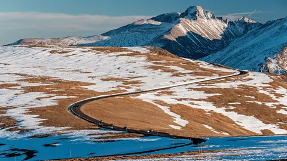
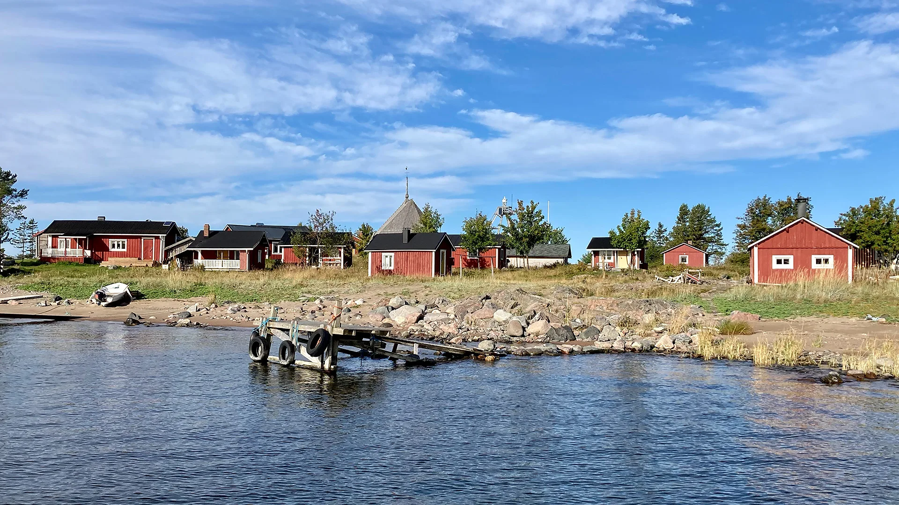
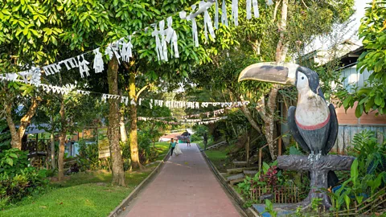

Travel A stunning road trip that takes you under the sea With tourism set to reach an all-time high in the Faroe Islands this year, travellers should seek out the archipelago's slower roads and newly opened sub-sea tunnels. In the news EasyJet launches new routes from City of Derry 33 mins ago Northern Ireland Woman barred from plane over 'slight' passport mark 1 day ago Will there be more air travel chaos this summer? 2 days ago BBC InDepth What are my rights if my flight is cancelled or delayed? 4 days ago Business US airline suspends staff after black men kicked off flight 6 days ago US & Canada Adventures Britain's myth-shrouded, sacred wetlands Legends will always swirl around Glastonbury, but conservation projects like the Avalon Marshes point to a future that transcends the mythical and has real benefits for our planet. 3 days ago Travel The US' awe-inspiring 'Highway to the Sky' Snaking for 48 miles through Rocky Mountain National Park, Trail Ridge Road traverses some of Colorado's wildest country in a series of hair-raising twists and turns. 6 days ago Travel  The US city throwing an epic party for Prince To commemorate the 40th anniversary of Purple Rain, Prince's hometown is rolling out the purple carpet for fans in a four-day festival. 7 days ago Travel The English solstice site older than Stonehenge Just 38km north of Stonehenge, Avebury draws its own annual solstice visitors who want a more up-close and personal experience with Britain's ancient standing stones. 8 days ago Travel Is it ethical to travel to the ends of the Earth? Despite the risks, costs and environmental concerns of extreme tourism, people are still drawn to potentially dangerous trips – but why? 18 Jun 2024 Travel The Scottish isle you can only visit on a day trip Every spring, almost 100,000 seabirds – guillemots, great skuas, razorbills and puffins – descend on the small island of Handa, just off Scotland's far north-west coast. 15 Jun 2024 Travel In Pictures Stunning photos of Iraq's holy pilgrimage cities Travellers to what was once was the spiritual centre of the world can learn about the region's long and storied history – as well as see the biggest annual pilgrimage on Earth. The SpeciaList An F1 driver-turned-DJ's guide to Barcelona Jaime Alguersuari was once the youngest-ever F1 racer; now he's a DJ in his hometown. Here are his Barcelona picks, from tapas at Bar Cañete to nights out in Eixample. 5 days ago Travel Where a celebrity chef eats in Paris Michelin-starred female chef Anne-Sophie Pic dishes on her favourite restaurants in Paris right now, from the iconic Chez l’Ami Louis to newcomer Table – Bruno Verjus. 7 days ago Travel Buenos Aires's best queer tango experiences Tango dancer Anahí Carballo believes any two can tango. Here is her guide to Buenos Aires's queer tango scene, from Muchaches in the barrio to the Tango World Championships. 16 Jun 2024 Travel Eight of the best places to swim in Copenhagen Whether you're relaxing at the snail-shaped Kastrup Sea Bath or taking a harbour dip at Kalvebod Bølge, Copenhagen is a paradise for swimmers. 11 Jun 2024 Travel A DJ's guide to queer Berlin DJ Cormac left Northern Ireland and dominated Berlin's queer dance music scene. Here's his guide to Berlin's best LGBTQ+ spaces, from gay saunas to body art. 9 Jun 2024 Travel  An Aston Martin racer's guide to Montreal Lance Stroll is F1 royalty and a born-and-bred Quebecois. This is the Aston Martin racer's guide to Montreal, from runs through Mount Royal Park to smoked meat at Lester's. 5 Jun 2024 Travel A queen's guide to Miami's drag scene Miami native Tiffany T Fantasia calls herself Andy Cohen's favourite drag queen. Here are her top picks for soaking up Miami's drag culture, from club kid bars to video lounges. 2 Jun 2024 Travel Six of the best cocktail bars in Athens Mixologist Georgia Georgakopoulou shares her favourite Athens cocktail bars, from the iconic Galaxy Bar to newcomer Feelin' Good. 29 May 2024 Travel Watch Sushi master brings authentic Japanese techniques to NYC At Icca, Japanese sushi master chef Kazushige Suzuki blends ancient methods with other cuisines. 8 Jun 2024 World's Table Mount Nemrut: Turkey's mystical stone monoliths Christa Larwood climbs Mount Nemrut to learn more about a group of mystical stone monoliths. 3 May 2024 Travel World's first 'zero-waste' restaurant without a single bin As part of its mission, Silo uses a nose to tail and root to tip approach to cooking out of respect for nature. 21 Apr 2024 World's Table Sweden's Icehotel: The menu inspired by eight Sami seasons The menu at the Icehotel, the world's first hotel made out of ice and snow, is served on plates of ice. 14 Apr 2024 World's Table Why Europe has so few skyscrapers Only seven of the world’s 1,000 tallest buildings are in the EU. Watch to find out why. 29 Mar 2024 Destinations Why is Finland the happiest country in the world? The Finns have been named the happiest people seven years running. How do they do it? 28 Mar 2024 Culture & Experiences Pust: An ancient festival to chase away winter Ready for spring? Here's how locals saved an almost forgotten ritual in Slovenia. 27 Mar 2024 Culture & Experiences Four Japanese principles to lead a good life We are entering Cherry Blossoms Season in Japan and in many US cities. What does this tradition teach us today? 20 Mar 2024 Culture & Experiences Inside the only all-female Indian kitchen in the world London's Darjeeling Express is ground zero for chef Asma Khan, a champion of women's empowerment. 9 Mar 2024 World's Table Into the wild: 'Everyman's right' to forage in Finland Foraging is one of Finland's favourite hobbies and an essential part of the culture. 4 Mar 2024 World's Table Baggage fees and the rising costs of airline travel Baggage fees made airlines a record $33 billion in 2023 so we look at how we got here. 29 Feb 2024 Culture & Experiences How the Amazon became a safe-haven for enslaved Africans The history of how the Maroons escaped slavery through an unknown route in the Amazon rainforest. 22 Feb 2024 Culture & Experiences A unique experience in the heart of a Norwegian fjord Floating in the middle of a Norwegian fjord, Restaurant Iris takes diners on an 'experiential dining' journey. 17 Feb 2024 World's Table The mixologist serving up Black History, one drink at a time Deniseea Taylor is a mixologist who teaches what she jokingly calls 'drunk Black History'. 17 Feb 2024 World's Table The first two-Michelin-star Chinese restaurant outside Asia Taste of China: How chef Andrew Wong takes diners on a culinary journey across China's provinces. 10 Feb 2024 World's Table The surprising origins of the Super Bowl American football is a US tradition unlike any other and yet it traces its roots to an ancient Roman game. 9 Feb 2024 Culture & Experiences The Schwebebahn: Germany's spectacular 'flying' train Germany's suspension monorail is one of the closest modes of transport you'll get to a flying train. 3 Feb 2024 Destinations The country with earliest wake-up time in the world Early birds: Why do Colombians tend to get up earlier than all other countries around the world? 11 Jan 2024 Culture & Experiences British v American scones: Is there a difference? American baker and chef Nancy Silverton explains the difference between British and American scones. 24 Dec 2023 World's Table Tiwanaku: The civilisation that mysteriously disappeared The ancient Tiwanaku civilisation is known as the 'mother culture' of South America. 6 Dec 2023 Culture & Experiences Green Getaways Hiking the world's largest urban forest After the Tijuca forest was decimated by colonial plantations, an ambitious rewilding programme is now aiming to ensure the survival of Rio de Janeiro's ancient rainforest. 17 May 2024 Travel  The Amazonian town putting world cities to shame Puerto Nariño is a tranquil experiment in sustainable living where motor vehicles are banned and the streets are as clean as Copenhagen's. 19 Apr 2024 Travel The Japanese town where you can sleep in a castle In Ozu, you can stay at a hotel dispersed across an ancient castle, samurai residences and old merchant homes, while supporting the town's award-winning model of sustainable tourism. 17 Mar 2024 Travel Turkey's 'time-warp' islands where cars are banned Home to grand but faded palaces and mosques, the Adalar islands offer a glimpse into Istanbul's multicultural past as well as a peaceful escape. 4 Mar 2024 Travel World's Table The wild ceremonies of the Turkish 'meatball' One of the country's most popular fast-food items, çiğ köfte is traditionally associated with wild and rowdy gatherings in south-eastern Turkey. 1 Jun 2024 Travel A chicken recipe so good its origin is being fought in court A dish beloved around the world, butter chicken is now at the heart of a legal battle being waged by two of India's oldest restaurants. 28 May 2024 Travel What will we eat on the Moon? The Moon may be the final frontier for mankind, but what will we eat when we get there? Pasta and protein bars made out of thin air are just the beginning. 25 May 2024 Travel Portugal's take on beef bourguignon Akin to France's heartier, spicier, richer boeuf bourguignon, "alcatra" is synonymous with a single island in the remote Azores archipelago. 19 May 2024 Travel More on Travel 1 hr ago Private car parks to have 10-minute 'grace period' But new code of practice is criticised for failing to protect drivers from "sharks" in the industry. 1 hr ago UK 1 day ago Council could leave regional public transport scheme The county council is considering leaving a transport partnership with neigbouring authorities. 1 day ago 2 days ago Flights diverted after evacuation at airport Bristol Airport's control tower was evacuated due to a false alarm. 2 days ago 2 days ago Aurigny launches winter schedule after disruption The States-owned airline has been criticised following a series of issues in recent months. 2 days ago Guernsey 3 days ago Aer Lingus and pilots to have separate meetings over pay Ireland's Labour Court invited Aer Lingus and the IALPA to meetings and both sides have accepted the invitations. 3 days ago Europe 3 days ago Parents grateful for 'rescue' from airport chaos Two children risked missing cancer treatment as flights were grounded at Manchester Airport. 3 days ago Manchester 3 days ago Manchester Airport passengers without luggage after power cut A power cut caused cancellations of departures and arrivals at Manchester Airport. 3 days ago Manchester 3 days ago Writer uncovers quirky side of Tyne and Wear Metro Keith Watson has spent a year collecting quirky facts and stories about the Tyne and Wear Metro. 3 days ago England 4 days ago Manchester Airport flights resume after power cut chaos An investigation will be held after flights from Terminals 1 and 2 were cancelled after a power cut. 4 days ago Manchester